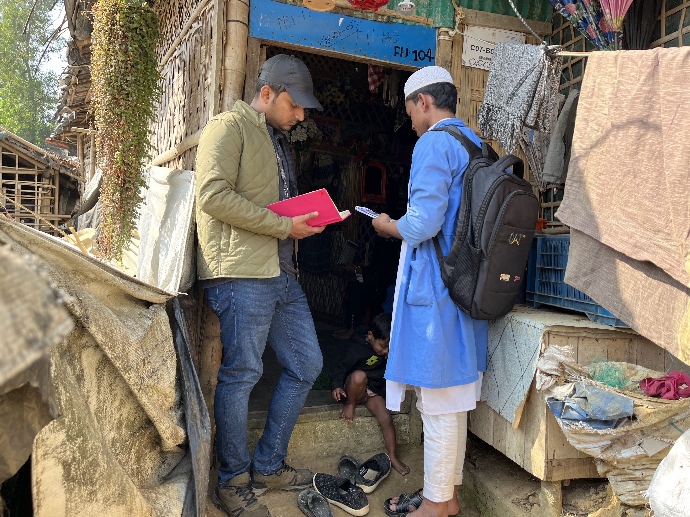

UNHCR Shelter Programme - ~210,000 Refugees, 7 Camps, 3 Years
Led results-based delivery of approximately 12,000 annual shelter repair interventions under a USD 2M+ programme, achieving 99% budget utilization, 71% household cyclone tie-down coverage, and full post-fire reconstruction for 50 affected shelters - while supervising 35 staff and training 28 engineers on construction quality and compliance.
- 210,000 beneficiaries
- USD 2M+ budget, 99% utilized
- 71% cyclone coverage
- 35 staff supervised